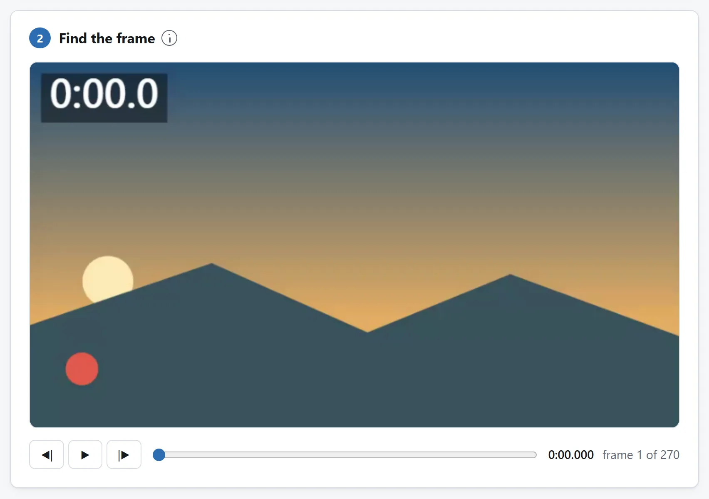
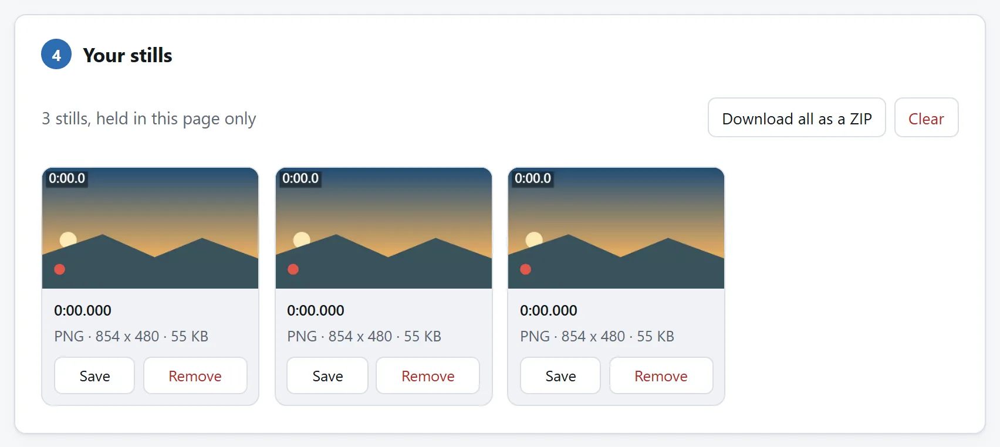

简短的回答
打开视频截帧，把片子拖进去，找到那个瞬间，按下截取这一帧。落到下载文件夹里的，是按视频自己的分辨率出的那一帧——4K 的片子就是 3840 × 2160，跟页面上的预览画面有多大没有关系。
只要文件大小不成问题，格式就放着 PNG 不动。这一页剩下的部分，讲的是上面这两句话为什么和截屏不是一回事，以及这个差别什么时候值得在意。
操作说明、维修笔记和封面
食谱、维修或练习演示的一张清晰帧，能让人不用看全片也跟着做。逐帧找手和零件清楚的时刻，后续裁剪或标注用 PNG，笔记记下时间或帧号方便找回动作。无损格式不会消除运动模糊。
同样可做视频封面或项目前后记录。成品只发消息时选 JPEG，按观看尺寸检查。网页播放器可把静图用作播放前海报；缩略图流程讲捕获后的裁剪和字节预算。
为什么暂停后的截屏是另一张图
这件事人人都已经有办法了：暂停、按截屏键、把控制条裁掉。它管用，随手发一张的话，这份力气也刚刚好。只是到那一步为止，这张图已经被做了四件事，而且没有一件能撤回：
- 它是窗口那么大，不是视频那么大。4K 的片子放在半屏的播放器里，你拿到的就是一张半屏播放器的图。凡是在文件里、却没到屏幕上的像素，全都没了。
- 它被缩放过。播放器为了把这一帧塞进那个窗口所做的一切——柔化、锐化，或者只是重新采样——都已经烙进去了。
- 它走过了显示这条链路。色彩管理，还有 HDR 片子上那一道按你显示器、而不是按文件挑出来的色调映射。
- 它多半还带着家具。控制按钮、进度条、字幕，还有鼠标指针。
取帧工具避开上面四个问题。它解码文件中的实际画面，把像素写出来。图片与视频画面尺寸相同，也没有覆盖绘制内容。但画布导出仍是 8 位图片。HDR 或 10 位源会在过程中转换，所以 PNG 保留的是画布上的静态像素，不是原始 HDR 数据。
正好停在你要的那一帧
这是大多数工具悄悄做错的地方，而且值得知道，换成任何一个工具你该看什么。
视频不是一条按你观看顺序排好的图片带子。绝大多数帧存的是它和别的帧差在哪儿，而在任何带 B 帧的文件里，存放的顺序都不是显示的顺序。一个把播放器扔到某个时间点、然后抓下出现的画面的工具，只能听凭那个播放器怎么取整；而一个靠加三十分之一秒来「往前走一帧」的工具，在任何不是正好 30 fps 的片子上都是错的——那几乎包括所有手机视频，因为它们会随着光线变化改帧率。
出路是去读文件自己那份帧的清单，再按帧在清单里的位置去点名。碰上 MP4，这里的工具就是这么做的：滑块一格走一帧，方向键一次走一帧，而且它能告诉你现在停在 3,540 帧里的第 812 帧，因为它数过。碰上它读不了的格式，它会明说，然后按大约一帧的量去挪，而不是装作数得清。
有个检验任何截帧工具的快办法：在动作快的地方连着往前走几帧。要是画面有时不变，或者一下跳两帧，那这个工具是在拿时间戳猜。

该存成什么格式
说到底只有三个答案，怎么选，取决于这张图接下来会经历什么。
- PNG——默认的那个，也是唯一把这一帧原样存下来的。图要拿去修、要打印、要和另一帧比对，或者要留着，就选它。它也是最大的： 1080p 出来几个 MB，4K 出来 8 MB 上下，因为照片式的画面正好不是 PNG 的压缩擅长的东西。
- JPEG——十分之一的大小，而且到哪儿都认。做缩略图、做预览，或者直接塞进文档和聊天窗口，就选它。它是在视频自己那层有损压缩之上再压一次，所以要接着修图的话，它是个错的起点。
- WebP——同样的观感下更小，如今该支持的地方都支持了。唯一要留神的是老软件：有些电脑上的程序至今打不开。
有一点值得说清楚：从视频里取出来的一帧，本来就已经是压过的画面了。存成 PNG 并不能把那一层撤销，也拿不回编码器当初拍摄时扔掉的细节。PNG 给你的，是不让东西被扔第二遍。要是这张图之后还要调色或者裁切，这有意义；要是只是发给别人，那没有。
一次截很多张
每隔几秒一张，和某个瞬间一张，是两件不同的活，而且它出现得比听上去更频繁：给一段长录像做一张联系表、挑封面用的缩略图、为了检查一整天拍摄里的对焦和曝光而均匀取的样。
设好间隔，按下连拍那个按钮，工具就把片子走一遍，在每个刻度上取一张。两点实际的提醒。片子长的话，间隔留宽裕些——一小时素材每秒一张就是 3,600 张，这也是这里把一次连拍封在 500 张的原因。另外，没有别的理由的话，这种活就选 JPEG：一百张 4K 的 PNG 差不多是一个 GB，还没等你下载一张，页面就得先抱着它们。
它们会打成一个 ZIP 回来，用时间码命名，所以既按发生的先后排好队，每一张也都能在视频里重新找到。

竖着拍的视频，和那张经典的躺倒静帧
要是你从手机视频里取过一帧、结果它是躺着的，原因就在这儿。手机是横着记录的，它不去转像素，而是把四分之一圈的旋转写进文件。播放器会读这个旋转并照做；只读像素的工具不会，于是出来的是一张完全没问题的、时刻也对的图，只是转了 90 度。
文件本身没有任何毛病，事后转回来除了麻烦也不花你什么。这里的工具会从轨道上读出旋转、在绘制之前先用上，所以竖着的片子给你竖着的图。
拿不回来的东西
一张静帧最多只能和它来的那一帧一样好，而有两件事不管你用哪个工具都限着它。
动态模糊长在帧里。曝光期间被摄的东西在动，那这段动作的每一帧都是糊的，里面并不存在一张清楚的等你找。唯一的补救是用更高的快门速度去拍，而那得发生在录之前。
压缩也长在帧里。视频压得比照片狠得多，关键帧之间的那些帧压得更狠。一张静帧看着发块，就试试往前后挪一两帧：关键帧是整张存下来的，往往比邻居干净得看得出来。
要是这张图接下来还得换个尺寸或形状，那就当作单独一步来做：图片缩放能缩放、裁切和转换，它的指南里写了这几件事各要付什么。
为什么这件事不需要上传
在浏览器里解码视频是近些年才有的事，而且是真的：WebCodecs 暴露的正是你手机放视频时用的那颗硬件解码器。活是在本来就有这个文件的机器上干的，而对一个几个 GB 的片子来说，这也是唯一说得通的安排——传一小时 4K 上去，只为换回一张 8 MB 的图，怎么算都是笔亏本买卖。
这里的工具没有任何形式的网络功能，页面的 Content-Security-Policy 里写着它允许联系的每一个地址，没有一个属于本站。你要是宁可自己查也不愿听我们说，拔掉网线，照样截一帧试试。
把文件传给在线转换器安全吗？那一页还给出了另外三条你可以拿去检验任何工具的办法。